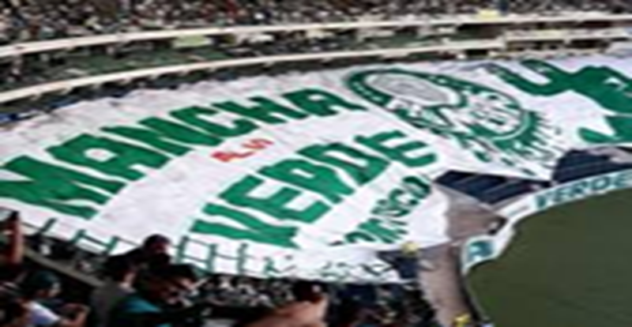

| Home | Quem somos | Contato | |
|  | |
Bem-vindo à Subsede de BrasíliaPalestra Italia é um nome criado em 26 de agosto de 1914, na cidade de São Paulo, pelo imigrante italiano Luigi Cervo, no ato da fundação do clube esportivo hoje conhecido como Sociedade Esportiva Palmeiras. Na década seguinte ao seu surgimento, esse nome foi também adotado por outros clubes do futebol brasileiro, dentre os quais, o Cruzeiro Esporte Clube, de Belo Horizonte, e o Palestra Itália Futebol Clube (já extinto), de Curitiba, ambos fundados em 1921.
Homenagens ao Palestra ItaliaO Palestra Italia original escolheu o nome "Palmeiras" por ser a letra P a mesma inicial de Palestra, mantendo assim um vínculo com sua antiga denominação. O novo nome também é uma homenagem à extinta Associação Atlética das Palmeiras, na qual alguns jogadores do Palestra haviam jogado. |
|
Todos os direitos reservados |
|